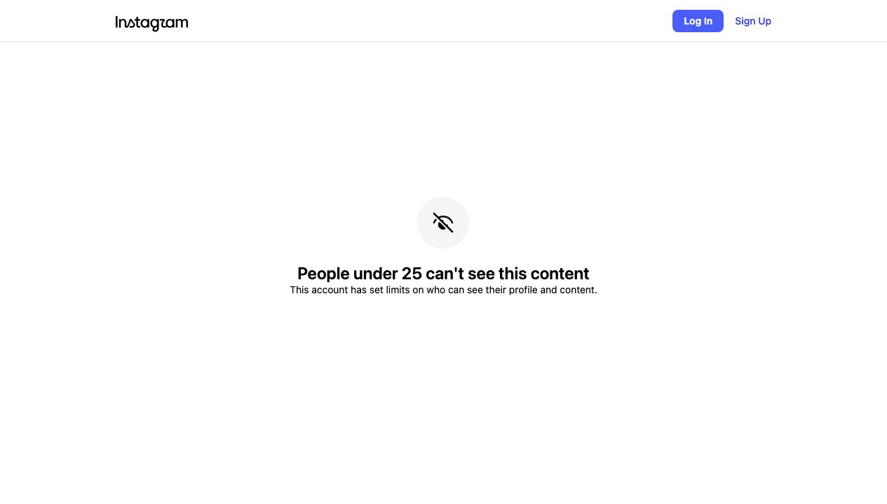

Instagram Post

Uncover Spain's Hidden Gems: A Travel Rating Guide.
video transcript (enriched by ClaudeClaw)
Summary
[CAPTION]
Uncover Spain's Hidden Gems: A Travel Rating Guide.
From vibrant Madrid to enchanting Seville, discover Spain's diverse charm.
[CAPTION]
Uncover Spain's Hidden Gems: A Travel Rating Guide.
From vibrant Madrid to enchanting Seville, discover Spain's diverse charm! 🇪🇸✨
Ever felt the pulse of a city? Madrid's tapas bars and endless energy make it the heartbeat of Spain, ranking it a solid A tier.
Barcelona, on the other hand, falls to a C tier with its mass tourism and crowded streets. Is it worth the hype? 🤔
For party lovers, Ibiza might tempt you, but be ready to splurge! A D tier for the playground of the rich and famous. 💸
But don't miss Seville! Known as the soul of Spain, it's an S tier experience filled with flamenco and fragrant orange trees. 🌳💃
San Sebastian, the food capital, serves up culinary delights that are simply unbeatable. That’s another S tier for sure! 🍽️🌊
As we tour through Granada and Valencia, hear about their impressive beauty and relaxed vibes. They score A tier for unforgettable experiences!
And let’s not forget the hidden treasures of Mallorca and Bilbao, each bringing unique flavors to the mix. 🏝️🍫
Ready to explore? Hit play to find out why each destination deserves its spot on the list! 🎥✈️
[VIDEO]
Madrid. Madrid, the capital, where the tapas bars never close and the energy is constant. It's elegant. It's royal. It's the heart of Spain. A tier. Barcelona. Barcelona is for off season trips. If you go during peak season, you're just fighting pickpockets and crowds. Great architecture, but the vibe? Definitely a C tier because of the mass tourism. Ibiza. Ibiza. You go, you party, you spend a month's salary in one night, you leave. It's a playground for the rich and famous. So for me, it's a D tier. Sevilla. Seville. Let me tell you, Seville is the soul of Spain. The orange trees, the flamenco, the heat. It's authentic. It's beautiful. You have to go. S tier. San Sebastian. San Sebastian. The food capital. Just think of the pinchos in your hands and the ocean breeze. It's pricey, but the quality is unmatched. S tier. Granada. Granada. It's an open air museum of Moorish history. Looking at the Sierra Nevada while eating free tapas, you have to go once in your life. A tier. Valencia. Great for the beach, great for the architecture, and of course, the home of Paella. It's like a more relaxed Barcelona. For me, a A tier. Mallorca. Mallorca. Beautiful. Smells like pine trees and salt. But it's basically a waiting room for German and British tourists. I'm giving it a B tier, but the hidden coves are S tier. Bilbao. Bilbao. The industrial giant turned into an art paradise. Elegant, modern, and incredible chocolate and food. No one used to go here, but now go. A tier. Malaga. Malaga. Chaos, energy, and the best fried fish you'll ever have. The people are the loudest and have the biggest hearts. For me, it's a S tier.
View original on Instagram Post →